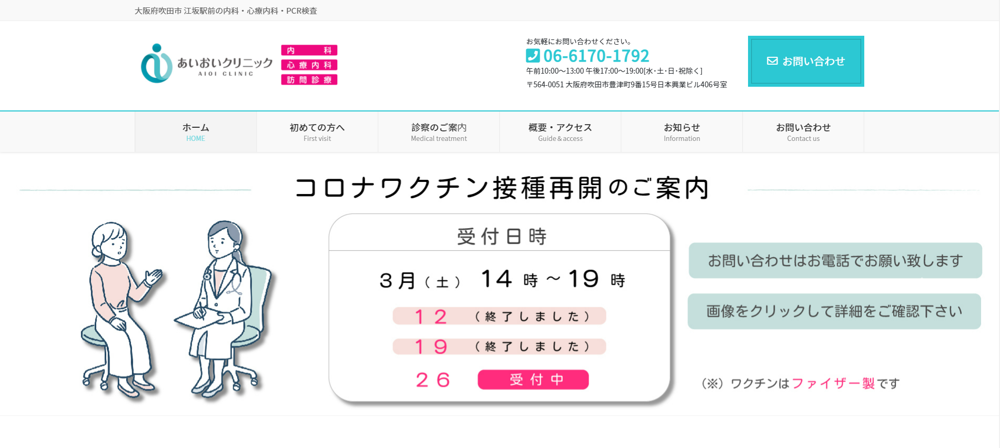

- テーマ
- コロナワクチン接種再開のご案内1
- 対象者
- 早くワクチン接種を受けたい人
- 何を意識して作ったか
- ファイザー製ワクチンと明示することで行動を促す
- 日時とともに終了した日も明示することで、予約希望者に行動を促す
- Webサイトの雰囲気にあった色合いを選択
- テーマ
- コロナワクチン接種再開のご案内（別バージョン）
- 対象者
- 休日しかワクチン接種を受けられない会社員
- 何を意識して作ったか
- （上記ご案内1③とは異なり）優しい色合いとイラストを使うことで心理障壁を下げ、関心をもつきっかけをつくりたい
- テーマ
- インフルエンザワクチン接種のご案内
- 対象者
- 受験期のお子さんをもつ親御さん
- 何を意識して作ったか
- 普段は予防接種を受けていない人に対しても訴求したい
- 効果が期待できるのは接種後2週間であることを明示することで早急な行動を促したい
- 金額を明示することで行動を妨げる要因を排除したい
- 行動を促すために軽やかな色合いを選択
- テーマ
- PCR検査実施のご案内
- 対象者
- コロナウイルスに感染しているかどうか不安な人
- 何を意識して作ったか
- 検査対象者を明示して不安を抱えている人の行動を促したい
- PCR検査を受けようと考えている人にクリックを促し、遷移先の情報を確認の上で予約につなげたい
- 「痛くない、すぐわかる、無料」と明示することで行動を妨げる要因を排除したい
- 行動を促すために軽やかな色合いを選択
- テーマ
- 天神橋筋商店街メインビジュアル1
- 対象者
- Webサイトを訪れた人
- 何を意識して作ったか
- おすすめスポットの写真を複数掲載し、明るい印象になるように調整
- 伝統ある商店街の力強さを毛筆フォントと黒色で表現
- 若い世代へも親しみやすさを感じてもらうためピンク色を使用
- テーマ
- 天神橋筋商店街メインビジュアル2
- 対象者
- 意外性に心惹かれる人
- 何を意識して作ったか
- 商店街で注力しているギャルみこしをアピールしたい
- 意外な取り合わせをきっかけとして、商店街に関心をもってもらい情報検索を促したい
- テーマ
- 天神橋筋商店街のロゴ（pc,sp,top用）
- 対象者
- 天神橋筋商店街サイトに訪れた人
- 何を意識して作ったか
- 毎年開催される天神祭をモチーフに、伝統的な力強さと若者への親しみやすさを書体によって表現しました。
- topに戻るボタンと認識でき、なおかつ"top"という字を崩してロゴと見た目の共通性を保つよう工夫しました。
- テーマ
- 天神橋筋商店街アクセスマップ
- 対象者
- 天神橋筋商店街の位置関係や複数の商店街から構成されていることをご存知ない人
- 何を意識して作ったか
- 大阪駅含め天神橋筋商店街の位置関係を明確にすることで興味をもってもらいたい
- 路線図の屈曲を簡略化しスッキリした印象にすることで、閲覧を促し関心度を高めたい
- 商店街の全体像がわかることで、詳細な情報（Webサイトの情報）にも関心をもつきっかけをつくりたい
- テーマ
- 天神橋筋商店街内のPRバナー
- 対象者
- 天神橋筋商店街に関心をもちはじめた人
- 何を意識して作ったか
- よく知られた芸能人のお店を紹介しクーポンを付与することで、商店街に訪れるきっかけをつくりたい
- おすすめスポットを巡るツアーがあることを紹介し、モデルルートを確認するきっかけをつくりたい
- テーマ
- 福祉系サイトのメインビジュアル
- 対象者
- 就労を目指して福祉サービスを利用検討している人
- 何を意識して作ったか
- イメージ：安心、前向き、就労
- メインカラーやロゴに使用している青系色と馴染む配色で、なおかつ安心感を表現
- 就労をイメージしやすいイラストを使用
- 横幅が変わってもメッセージを読みやすいレイアウトを検討
- テーマ
- 福祉系サイト内のバナー
- 対象者
- サイトを閲覧して関心をもっている人
- 何を意識して作ったか
- イメージ：スタッフの温かみ、サポート、前向き
- メインカラー（水色）を使用しながら、黄色を加えて温かみや未来へ前向きなイメージを表現
- 手書きのイラストに合わせて、オブジェクトの境界線や色味を調整